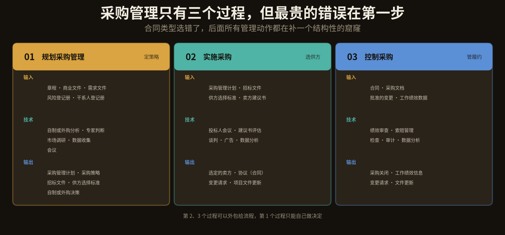
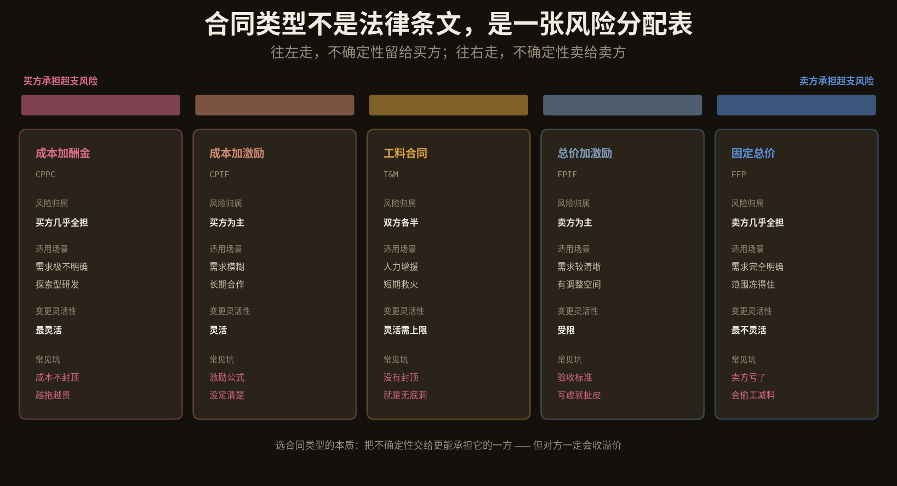
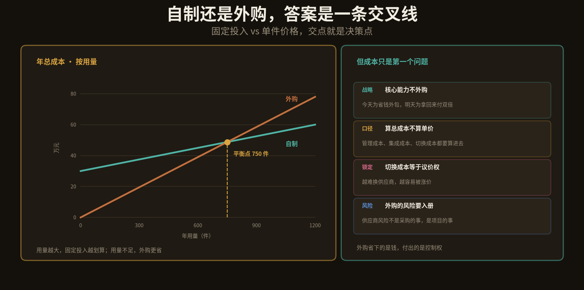
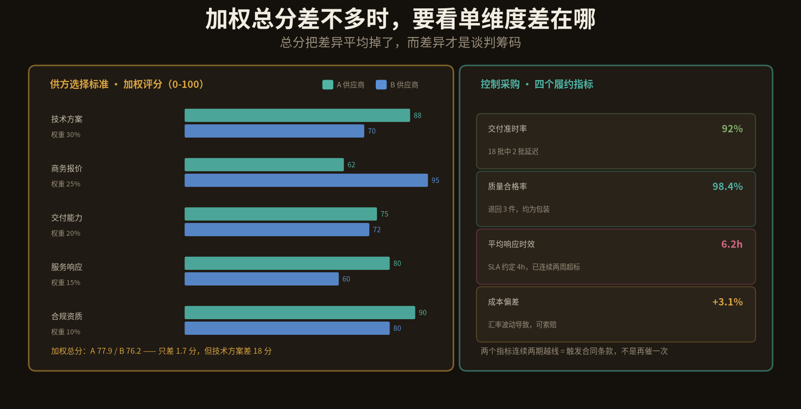
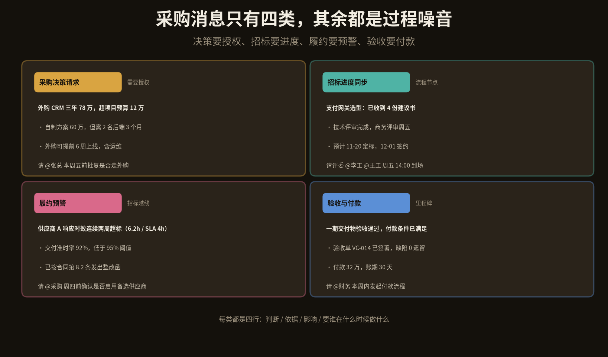

采购管理在十大领域里最不像「项目管理」，它看起来更像一段商务流程：走审批、发标书、比价格、签合同、付钱。
但它管的其实不是钱，是外部依赖。一个项目里所有「不由自己控制、但直接决定成败」的部分，几乎都在采购的范围内：云资源、外包团队、第三方接口、硬件设备、实施服务。
这类项目通常有三个共同症状：
一是采购卡在流程里。一个三万块的采购走了六周审批，等合同签下来，项目已经晚了一个月。流程本身没有错，错在没有按金额分级——三万和三百万走同一条路径，等于用最贵的流程管最便宜的事。
二是只看价格。三家比价，最低价中标，交付时质量不达标，返工成本是差价的三倍。这不是供应商的问题，是评标标准里没有给质量留权重。
三是签完就撒手。合同进了档案柜，条款只在两个时刻被想起来：出问题的时候，和打官司的时候。而合同真正的价值，在执行期间的每一次比对。
采购买的不是产品或服务，是「别人替你承担不确定性」，而这个价格一定比你自己承担更贵。
这是系列的第九篇。结构照旧：三个过程的输入输出、两个重点（合同类型与自制外购、供方选择与履约监控）、五份模板、归档方式、四类群消息、SKILL 目录，最后是边界。
上一篇讲风险时说到，采购会复用风险管理的定量工具——这一篇就会看到，自制或外购分析本质上是一次 EMV 比较，而合同类型的选择，就是把风险在甲乙双方之间重新分配。
1
三个过程：从「买不买」到「验没验」
PMBOK 里采购管理只有三个过程，是十大领域中数量最少的一类。数量少不代表简单，恰恰相反——每个过程都跨组织边界，跨边界的事最难。
规划采购管理 定策略。核心只回答三个问题：自己做还是买、买什么、用什么合同。技术上用自制或外购分析、市场调研、专家判断。输出采购管理计划、采购策略、招标文件和供方选择标准。
实施采购 选供方。发标、答疑、评标、谈判。技术是投标人会议、建议书评估和谈判。输出选定的卖家和协议——也就是合同。
控制采购 管履约。看供应商有没有按合同交付，出了偏差怎么处理，最后怎么验收关闭。技术是绩效审查、索赔管理、检查和审计。输出采购关闭、工作绩效信息和变更请求。

图 1 · 三个过程的 ITTO：定策略、选供方、管履约
这三个过程里，第 1 个决定了后面所有事情的天花板。合同类型选错了，控制采购阶段无论多努力，都只是在补一个结构性的窟窿：选了固定总价但需求不清楚，供应商会一路提变更、一路扯皮；选了成本加酬金但预算紧张，成本会像脱缰一样往上走。
AI 在这三个过程里的位置也很清楚：它不参与谈判，但能承担全部「比对与提醒」类的工作——比价、条款抽取、履约数据核对、到期提醒、供应商历史绩效汇总。这些事情人做得慢且容易漏，机器做得快且稳定。
2
重点一：合同类型就是一张风险分配表
这是第一个重点，也是整篇里最值得记住的一节。
很多人以为合同类型是个法律问题，其实它是个风险分配问题。五种常见类型排成一条谱：往左走，不确定性留给买方；往右走，不确定性卖给卖方。

图 2 · 五种合同类型的风险谱：成本加酬金在最左，固定总价在最右
规律很简单：需求越不确定，越往左；需求越明确，越往右。
需求完全明确、范围冻得住，签固定总价最省心。但前提是「完全明确」——这四个字比看起来难得多。很多团队以为需求清楚了，签完才发现还要补三十个细节，于是变更单堆成山，最后总价比预算翻倍，还多打一场官司。
需求极不明确、探索型研发，只能签成本加酬金。买方承担几乎全部超支风险，换来的灵活性。代价是成本不封顶，越拖越贵。
工料合同是短期救火的常用选择：按人天计价，灵活，但必须有工时上限。没有封顶的工料合同就是无底洞，这句话值得写在每个采购申请的审批页上。
这里有个容易被忽略的点：合同类型不止影响风险，还直接影响AI 该监控什么。
固定总价：范围变更必须留痕，所以要监控「有多少变更是没走正式流程的」。这类风险最隐蔽——供应商口头答应了，但没有变更单，验收时双方各执一词。
工料合同：累计工时对上上限，每周核对一次，剩余 20% 时预警。
成本补偿类：成本票据要核，做得出来的是异常检测——某类费用突然涨了 40%，是项目需要还是结算方式有问题。
所以第一条设计原则是：把合同类型作为一个结构化字段存下来，而不是只存一份 PDF。有了这个字段，脚本才知道该盯什么。
3
重点二：自制还是外购，答案是一条交叉线
这是第二个重点。几乎所有「自研还是买」的争论，都可以先落到一张图上看清楚。

图 3 · 自制有固定投入、外购按件计价，两条线的交点就是决策点
自制的成本结构是「固定投入 + 较低的变动成本」，外购是「零固定投入 + 较高的单件价格」。两条线一定会有交点，交点左边买更省，右边做更省。上图里，年用量 750 件就是平衡点。
但成本只是第一个问题。真正决定成败的往往不是这条线，而是线之外的四个因素。
战略：核心能力不外购。今天为省钱把核心模块外包出去，明天想拿回来要付双倍——不只是钱，还有已经流失的团队能力。
口径：算总成本，不算单价。报价单上的数字只是冰山一角，管理成本、集成成本、切换成本都要算进去。很多外购方案在报价上便宜 20%，加上管理成本之后反而贵了。
锁定：切换成本等于议价权。越难换供应商，越容易被涨价。所以签合同时就要想清楚「三年后我要换人，能换得动吗」——数据能不能导出、接口是不是标准、有没有第二家能接。
风险：外购的风险要进风险登记册。供应商交付延期、资质被吊销、被并购、涨价，这些都是项目风险，不是采购自己的事。上一篇讲的「触发条件」在这里可以直接复用：供应商响应时效、交付准时率，都是可监控的指标。
用一个 EMV 的框架来看更清楚：做或买，各画两个分支（顺利 / 出问题），每个分支给概率和成本，算出期望值。算完之后你往往会发现，两条路的期望成本差不多，但风险分布完全不同——自制把风险留在自己手里，外购把风险转移出去但付了溢价。
所以结论通常是：外购省的是钱，付出的是控制权。这句话在预算紧张的时候最容易被忘掉。
4
供方选择与履约监控：总分是最会骗人的数字
加权评分表几乎每个采购流程都有，但它的用法经常出问题。

图 4 · 加权评分与四个履约指标：A 与 B 总分只差 1.7 分
上面这张图里，A 的加权总分 77.9，B 是 76.2，只差 1.7 分。如果按总分选，A 胜出，看起来很合理。但拆开看：A 的技术方案高 18 分，B 的商务报价高 33 分。这两个差异根本不是同一个量级的东西，却被权重平均掉了。
正确做法不是改权重凑结果，而是把差异拿出来当谈判筹码：告诉 B，「你的报价优势很大，但技术方案差 18 分，能不能补一个实施团队驻场」。
三个常见陷阱：
调权重凑结论。心里已经有人选了，再倒回去调权重让它胜出。这是最容易发生、也最难被发现的一种失真。
打分没有证据。「服务好」是几分？凭什么？每一条评分都应该挂一条具体证据：案例、客户名单、SLA 条款、现场演示记录。
只评不归档。评完就丢了，下次招标又从零开始。而供应商的历史绩效恰恰是最有价值的资产——它能让下一轮的评标有据可依，而不是凭印象。
履约期看四个指标
交付准时率：按批次计，不是按项目计。一个项目十批交付，晚了三批，准时率是 70%，不能因为最后赶上了就说「按期交付」。
质量合格率：退回、返工都要算。注意分母——是按件、按批还是按功能点，口径要提前定。
响应时效：和合同 SLA 直接比对。这一项最容易越线，也最容易被忽略，因为「响应慢」不会立刻造成事故，只会慢慢消耗耐心。
成本偏差：实际支付 vs 合同金额。偏差超过 5% 就要解释来源：合理变更、汇率波动，还是追加采购没走流程。
有一条处理规则值得写进 SKILL：两个指标连续两期越线，就触发合同条款，不是再催一次。反复催办是无效管理——它消耗关系，不产生约束。而条款是有约束力的，什么时候发整改函、什么时候扣款、什么时候启用备选供应商，合同里都写着，照着做就行。
5
五份模板与组织过程资产归档
三个过程收敛成五份文档。其中最有价值的一份不是合同本身，而是合同摘要——把几十页的合同压缩成一张能被机器读的表。
统一 front-matter
---
doc_id: PR-PAY-2026-031
doc_type: contract_summary
project: payment-v2
version: 1.2.0
status: baselined
baseline_at: 2026-11-20
owner: wangjing
vendor_id: V-0087
contract_type: FPIF
amount: 780000
related: [RM-PAY-2026-014]
supersedes: null
---
doc_type 五个取值：procurement_plan、make_or_buy、bid_document、contract_summary、vendor_performance。
合同摘要：把条款变成能跑的数据
contract_id: CT-2026-031
vendor: 云启科技 vendor_id: V-0087
type: FPIF amount: 780000 cny
term: 2026-11-20 ~ 2027-11-19
payment:
- milestone: M1 ratio: 30%
trigger: 一期验收通过
net_days: 30
- milestone: M2 ratio: 40%
trigger: 全量上线
- milestone: M3 ratio: 30%
trigger: 质保期结束
sla:
response_hours: 4
availability: 99.9%
penalty:
delay_per_day: 0.3%
cap: 10%
termination:
notice_days: 30
data_return: true
warranty_months: 12
这份摘要里有三样东西是脚本直接要用的：milestone 决定付款提醒、sla 决定履约阈值、penalty 决定越线后的动作。没有这份摘要，合同就只是一份存在网盘里的 PDF，谁也不会每天打开它。
其余四份的分工
采购管理计划：定规则。什么金额走什么流程、谁审批、什么情况可以单一来源。
自制或外购决策：留证据。不是只写结论，要写清当时的假设、用量预测、总成本构成。半年后有人问「为什么当初不自己做」，这份文档就是答案。
招标文件与选择标准：定口径。权重、评分细则、证据要求，必须在中标结果出来之前冻结。
供应商履约评价：攒资产。每季度一份，四个指标 + 一次定性判断。这份文档的价值是复利式的——三年后新项目招标，可以直接调出「这家供应商在同类项目上的实测准时率」。
归档：进项目知识库
路径固定为 /kb/{project}/procurement/{doc_type}/{doc_id}-v{version}.md，三态 draft → baselined → superseded，永不物理删除。
但采购资产还有一层特殊性：它应该跨项目复用。项目知识库按项目组织，供应商档案却应该按 vendor_id 聚合到组织级知识库。一个供应商在三个项目上的履约表现汇总起来，才构成真正可用的判断依据。同时要注意权限——报价和合同金额属于敏感信息，只对项目核心成员可见。
6
四类群消息与 SKILL 结构
采购消息有一个特点：几乎每一条都需要某个具体的人做一个具体动作——批预算、当评委、发整改函、发起付款。所以格式比其他领域更简单，只要把「要谁做什么」说清楚就行。

图 5 · 四类采购消息：决策请求、招标进度、履约预警、验收付款
采购决策请求：需要授权时发。金额、选项、差异、影响，最后给一个明确的批复请求和截止时间。
招标进度同步：流程节点变化时发。已收几份、评审到哪一步、下一步谁要做什么。这条的作用是减少「现在到哪了」的追问。
履约预警：指标越线时发。写清越线值、合同阈值、已采取的动作。这条最容易变成情绪化催办，所以要强制带「已按第几条发出整改函」这样的证据。
验收与付款：里程碑达成时发。验收结论、付款金额、账期，以及等谁的动作。
SKILL 目录：一个 Skill，五个脚本
skills/procurement-manager/
SKILL.md
references/
itto.md # 三过程输入技术输出
contract-types.md # 五类合同风险对照
templates.md # 五份文档模板
scoring.md # 评分权重与证据要求
messages.md # 四类群消息格式
scripts/
makebuy.py # 交叉点与 EMV 计算
score.py # 加权评分与差异分析
contract.py # 合同摘要解析与提醒
performance.py # 履约四指标汇总
notify.py # 企微 / 飞书推送
contract.py 是这套的核心：它读合同摘要，按 milestone 生成付款提醒、按 sla 生成履约阈值、按 penalty 生成越线后的动作建议。合同一旦被结构化，从「档案」变成了「定时任务」——这是整个采购管理里 AI 介入收益最高的一处。
7
边界：别把采购做成纯价格游戏
第一，AI 不代替谈判。谈判涉及让步节奏、关系判断、底线揣摩，这些是人的事。AI 能做的是准备材料：对方报价的历史分位、同类项目的成交价区间、每个条款的市场惯例。
第二，比价不等于最优。最低价中标是最省事的评标方式，也是最容易埋坑的方式。价格差异背后往往是服务范围的差异——便宜的那家可能不含实施、不含培训、不含质保。
第三，合同是底线不是目标。合同的用途是「万一出事时有依据」，不是「日常管理的抓手」。如果一段合作关系需要天天翻合同条款，那这段合作本身就有问题。
第四，供应商不是敌人。把所有供应商都当对手防，短期可能少花点钱，长期会失去优先排产、优先响应、优先支持的待遇。而这些在关键时刻比折扣值钱得多。
第五，敏感数据要控权限。报价、合同金额、供应商评价都属敏感信息，只对项目核心成员可见。把这些东西无差别推到群里，一次就可能造成无法挽回的商务损失。
采购管理省下的每一分钱，都要用等量的管理成本去换。
这句话是对「砍价」这个动作最好的注脚。压价 5% 听起来是纯收益，但如果没有相应的履约监控能力，这 5% 通常会在交付质量上还回去，而且还得更贵——因为返工发生在项目末期，那时候每一天的代价都是最高的。
下一篇拆干系人管理。它是十大领域里最软的一个，也是最容易被做成「一张 Excel 名单」的一个——识别、分析、参与度评估，三件事都能做，但真正难的是「怎么让一个不配合的人变得配合」，而那件事没有工具能替你完成。
系列进度：框架 → 范围 → 进度 → 成本 → 质量 → 资源 → 沟通 → 风险 → 采购（本篇）→ 干系人 → 整合。
Skill Accumulation 提示：这是本系列第九篇同结构推文。九篇下来，骨架没有变过一次——ITTO 表、两个重点、模板、归档、群消息、SKILL、边界。稳定的结构让内容可以持续产出，也让读者形成预期。